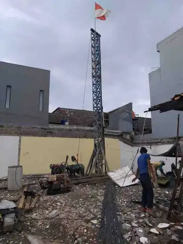
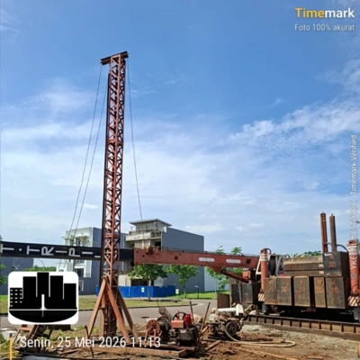
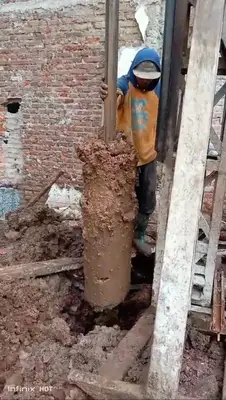
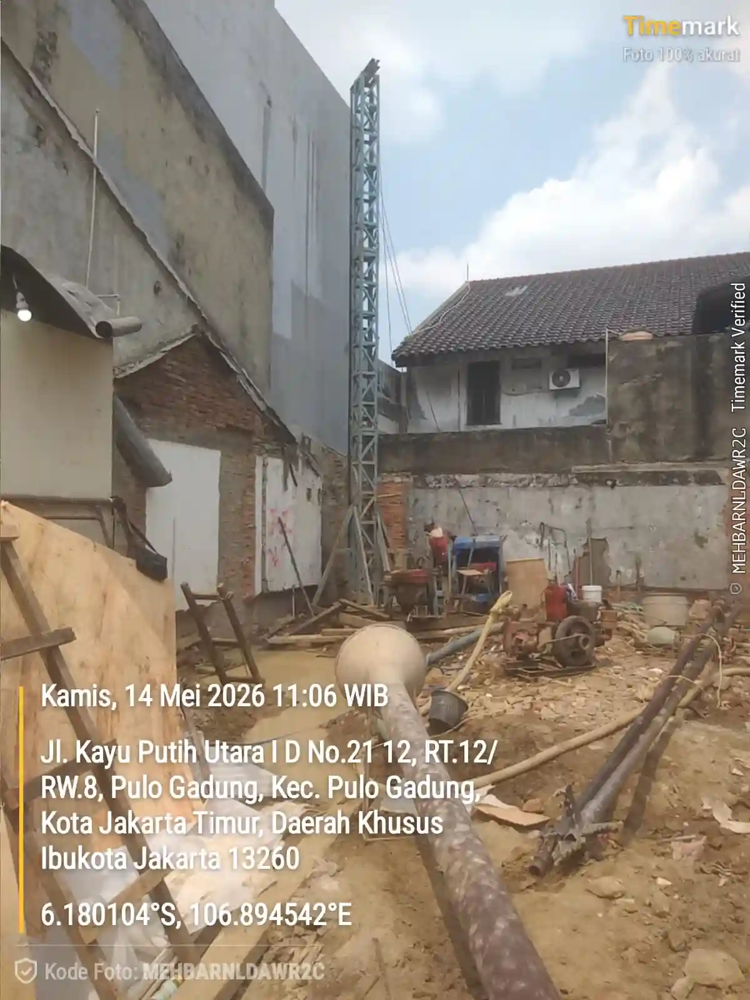
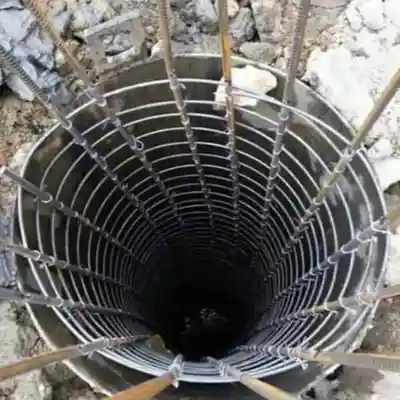
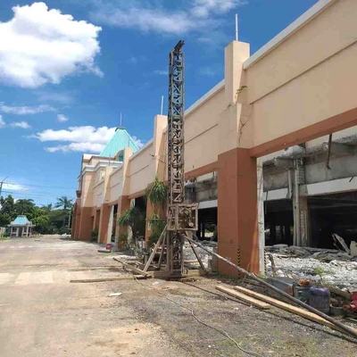
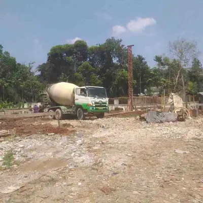

Borepile vs Strauss Pile
Perbandingan lengkap agar Anda dapat memilih jenis pondasi terbaik.

Harga bore pile Jakarta 2026 untuk jasa pengeboran saja mulai dari Rp120.000/m untuk mesin (mini crane), dan manual atau strauss pile mulai dari Rp70.000/m. Kalkulator di bawah bisa menghitung estimasi total biaya proyek Anda, tinggal melengkapi sesuai proyek anda dan akan keluar hasilnya secara otomatis. Melayani seluruh Jakarta Pusat, Barat, Selatan, Timur, dan Utara.
Estimasi Total Biaya JASA BOR
Berikut harga JASA PENGEBORAN SAJA (belum termasuk material beton & besi) untuk wilayah Jakarta dan sekitarnya. Kedalaman pengeboran bergantung pada diameter dan kondisi lapisan tanah, di lapangan kami pernah tembus hingga kedalaman 25-30meter, pastikan cek sondir tanah dahulu agar mengetahui kedalaman yang tepat untuk pengeboran hingga mencapai tanah keras.
| Diameter | Harga (Rp/m) | Kedalaman Maks | Cocok Untuk |
|---|---|---|---|
| 30 cm | 120.000 | 30 meter | Rumah 1-2 lantai |
| 40 cm | 135.000 | 30 meter | Ruko, kantor |
| 50 cm | 190.000 | 30 meter | Gudang, pabrik kecil |
| 60 cm | Hubungi Kami | 30 meter | Hotel 3-4 lantai |
| 80 cm | Hubungi Kami | 30 meter | Gedung 5-8 lantai |
| Diameter | Harga (Rp/m) | Kedalaman Maks | Cocok Untuk |
|---|---|---|---|
| 20 cm | 70.000 | 10 meter | Area sangat sempit |
| 25 cm | 75.000 | 10 meter | Gang kecil |
| 30 cm | 80.000 | 10 meter | Rumah, ruko 1-2 lantai (tanah padat) |
| 40 cm | 100.000 | 10 meter | Rumah, ruko 2 lantai (tanah padat) |
Mesin mini crane: Rp2-3jt | Strauss pile (Manual): Rp1jt
Mesin mini crane dan gawangan: 200 meter | Mesin Hidrolik: 400 meter | Strauss Pile (Manual): 100 meter, di bawah itu bisa hubungi kami
Jika memakai bore pile mesin mini crane metode wash boring (bor basah), perkiraan biaya tambahannya sekitar: Rp800.000 - Rp1.200.000/rit (tergantung volume)
Sangat wajib untuk menentukan kedalaman pengeboran yang tepat hingga mencapai tanah keras


Spesifikasi: Bore pile mesin mini crane Ø40cm, kedalaman 5m, 40 titik
Metode: Dry Boring (Bor kering)
Biaya jasa: 5m × Rp135.000 × 40 = Rp27.000.000
+ mobilisasi: Rp3.000.000
Total: Rp30.000.000
Waktu: 14-16 hari kerja

Spesifikasi: Bore pile mesin mini crane Ø30cm, kedalaman 13m, 27 titik
Metode: Wash Boring (Bor basah)
Biaya jasa: 13m × Rp125.000 × 27 = Rp34.125.000
+ mobilisasi: Rp3.000.000
Total: Rp37.125.000
Waktu: 5-7 hari kerja

Spesifikasi: Strauss pile (bore pile manual) Ø30cm, kedalaman 9m, 12 titik
Biaya jasa: 9m × Rp85.000 × 12 = Rp9.180.000
+ mobilisasi: Rp1.000.000
Total: Rp10.180.000
Waktu: 4-6 hari kerja
📌 Note: Harga di atas sudah termasuk jasa pengeboran, perakitan besi tulangan, dan pengecoran beton, belum termasuk material (beton dan besi). Contoh di atas adalah proyek asli yang pernah kami kerjakan di lapangan. Kecepatan pengerjaan dipengaruhi oleh kondisi lapangan, akses lokasi, karakteristik tanah, dan yang paling penting adalah pasokan air yang cukup untuk metode wash boring.
Butuh harga khusus untuk diameter 30cm? Lihat detail harga bore pile diameter 30cm →
Jakarta dikenal dengan kondisi tanahnya yang lunak dan rawan penurunan (land subsidence), terutama di wilayah Jakarta Utara, Cengkareng, dan Pondok Gede. Metode bore pile menjadi solusi pondasi paling tepat karena:
Setiap lokasi memiliki karakteristik tanah yang berbeda, contohnya seperti tanah di Jakarta Utara yang sebagian berpasir, kami dapat menyesuaikan teknik bore pile untuk memastikan keberhasilan proyek di setiap wilayah di Jakarta.
Portofolio kami di Jakarta: Kami pernah mengerjakan bore pile di gudang Dunex Sunter, selain itu kami juga sering mengerjakan proyek rumah,ruko, gedung dan bangunan lain di Seluruh Wilayah Jakarta, seperti PIK, PIK 2, Puri Kembangan, Pondok Indah, Mangga Besar, Cempaka Putih, Kuningan, Sumur Batu, Sunter dll.
Kami melayani seluruh kecamatan di bawah ini. Proyek siap kami kerjakan.
Sangat aman. Bore pile justru direkomendasikan untuk tanah lunak seperti di Jakarta Utara, Cengkareng, dan Pondok Gede. Mini crane kami bisa menembus tanah rawa hingga kedalaman 30 meter sampai mencapai tanah keras.
Untuk 16 titik diameter 30cm kedalaman 12m, estimasi 5-7 hari kerja. Kalkulator di atas bisa memberi estimasi lebih akurat.
Ya. Mini crane kami bisa masuk area perumahan padat dengan getaran minimal, aman untuk bangunan sekitar.
Mesin sekitar Rp2-3 juta, manual Rp1 juta tergantung lokasi proyek (berdasarkan jarak dari gudang kami).
Sangat wajib. Data sondir menentukan kedalaman bore pile yang tepat sesuai kondisi tanah Jakarta yang umumnya lunak.
Bisa. Harga di atas untuk jasa pengeboran saja (sudah termasuk perakitan besi & pengecoran beton).
Insight pondasi dan konstruksi untuk membantu keputusan proyek Anda.

PerbandinganPerbandingan lengkap agar Anda dapat memilih jenis pondasi terbaik.
Lihat harga terbaru 2026 untuk bore pile diameter 30cm.

HargaInformasi terkini tentang harga bore pile di wilayah Tangerang untuk tahun 2026.
Konsultasi gratis. Dapatkan penawaran resmi dari tim teknis kami.
Konsultasi Gratis via WABaca Juga Harga Bore Pile:
Bekasi |
Tangerang |
Depok |
Bogor
Jl. Sunter Muara II, RT.17/RW.05, Sunter Agung, Kec. Tj. Priok,
Jakarta Utara, DKI Jakarta | kode pos 14350
Spesialis pondasi borepile dengan pengalaman lebih dari 10 tahun di Jakarta.